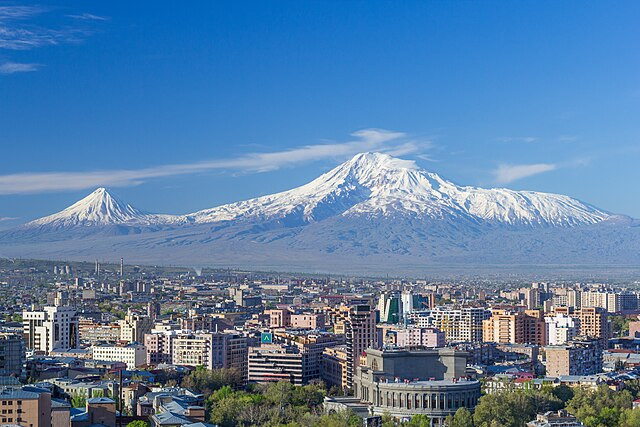
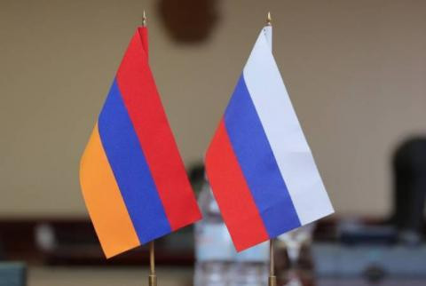
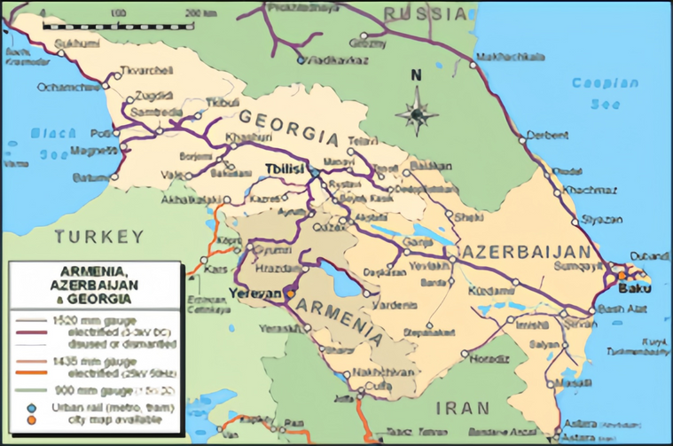

Strategic Location
Armenia is a landlocked country located in the South Caucasus region, bordered by Turkey to the west, Georgia to the north, Azerbaijan to the east, and Iran to the south. Its geographical position places it at the crossroads of Europe and Asia, making it a vital link for regional and global trade and energy routes.
Geopolitical Importance
Historically, Armenia's location has been both an advantage and a challenge. It served as a key route for ancient trade caravans along the Silk Road, facilitating cultural and commercial exchanges between the East and the West. In modern times, Armenia continues to hold strategic importance as a transit hub for energy pipelines, roads, and railways connecting the Caspian Sea, the Black Sea, and the Persian Gulf.
However, Armenia's landlocked nature and ongoing geopolitical tensions with its neighbors, particularly Azerbaijan and Turkey, limit its access to regional markets. The borders with these two countries remain closed, forcing Armenia to rely on its northern neighbor, Georgia, and its southern neighbor, Iran, for trade routes.

Key Trade and Energy Routes
Armenia's location is critical for the development of trans-regional infrastructure projects:
- North-South Corridor: Armenia is part of the International North-South Transport Corridor (INSTC), a trade route linking India, Iran, and Russia, and potentially extending to Europe.
- Energy Pipelines: While Armenia does not host major energy pipelines like its neighbor Azerbaijan, it remains strategically close to pipelines transporting oil and gas from the Caspian region to Europe.
- Roads and Railways: Projects like the Armenia-Georgia railway system connect the country to Black Sea ports, while the Meghri Free Economic Zone in southern Armenia aims to strengthen trade with Iran.
Historical Perspective
Over centuries, Armenia has been a contested territory for empires seeking control over this strategic region. From the Roman and Persian Empires to the Byzantines, Arabs, Mongols, and Ottomans, Armenia's location ensured its involvement in significant historical events. During the Soviet era, Armenia was part of the Transcaucasian region, which served as a critical gateway between the USSR and the Middle East.
The country's capital, Yerevan, is one of the world's oldest continuously inhabited cities, with a history dating back to 782 BC. Today, Yerevan serves as a political, cultural, and economic hub, reflecting Armenia's aspirations as a modern nation.
Modern Geopolitics
Armenia's foreign policy is shaped by its need to balance relations between major powers, including Russia, the European Union, and the United States. As a member of the Eurasian Economic Union (EAEU) and the Collective Security Treaty Organization (CSTO), Armenia maintains strong ties with Russia, which serves as its primary ally and security partner.
Despite its alliance with Russia, Armenia actively seeks closer relations with the European Union. The Comprehensive and Enhanced Partnership Agreement (CEPA) between Armenia and the EU strengthens political and economic cooperation. At the same time, Armenia's ties with Iran provide a critical lifeline for trade, given its geopolitical isolation caused by closed borders with Turkey and Azerbaijan.
Future Prospects
With its strategic location, Armenia has the potential to become a major transit hub connecting Europe, Asia, and the Middle East. Continued investment in infrastructure, regional cooperation, and a balanced foreign policy could unlock new opportunities for economic growth and regional stability.
However, resolving ongoing conflicts, particularly the Nagorno-Karabakh dispute with Azerbaijan, remains crucial for Armenia to fully leverage its geographical advantages.
